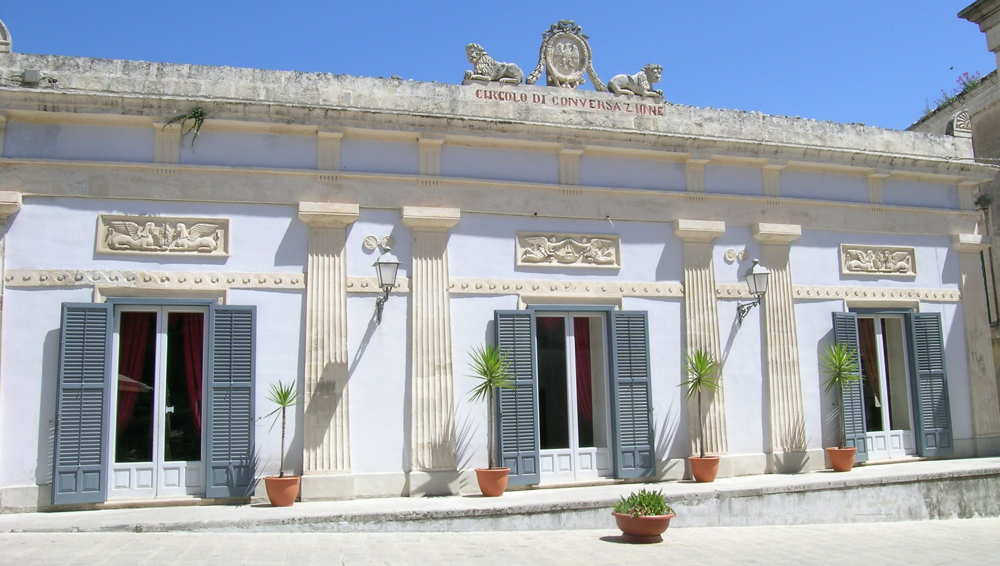
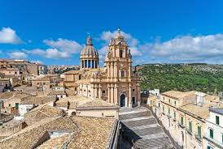
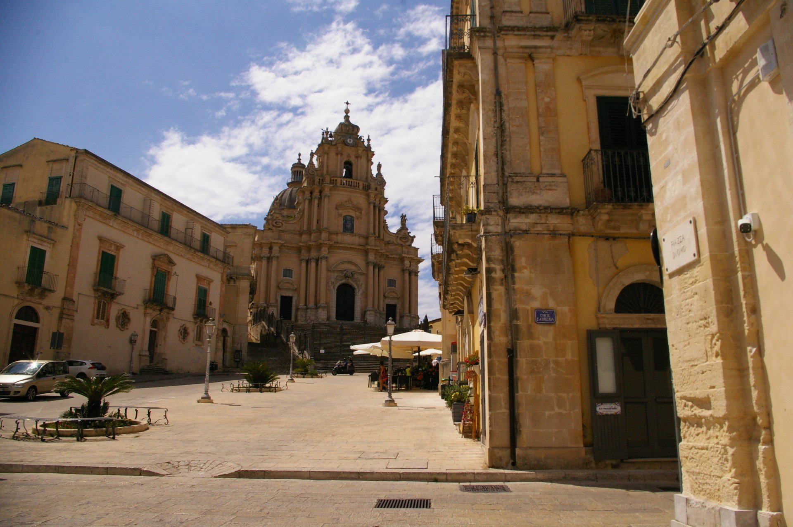

Piazza Duomo a Ragusa Ibla è il cuore scenografico del barocco del Val di Noto, ricostruito con fasto dopo il terremoto del 1693. La sua conformazione è unica: una lunga piazza digradante e leggermente curva che non segue un asse simmetrico, ma si modella sul pendio della collina. Questo spazio non era solo il centro religioso, ma il palcoscenico dell'aristocrazia ragusana, dove la pendenza del terreno viene sfruttata magistralmente per esaltare la verticalità dei monumenti e creare un effetto prospettico teatrale.

Cosa visitare in piazza:

Circolo di Conversazione: un raro esempio di caffè nobiliare in stile neoclassico,
un raro esempio di caffè nobiliare in stile neoclassico,.

Duomo di San Giorgio: capolavoro di Rosario Gagliardi, con la sua facciata
"a torre" che domina la piazza dall'alto di una scalinata cinta da una cancellata in
ferro battuto.

Palazzo Arezzo di Trifiletti: elegante dimora nobiliare situata proprio accanto al
Duomo, nota per il suo portale monumentale e i preziosi pavimenti in maiolica visibili
durante le visite.